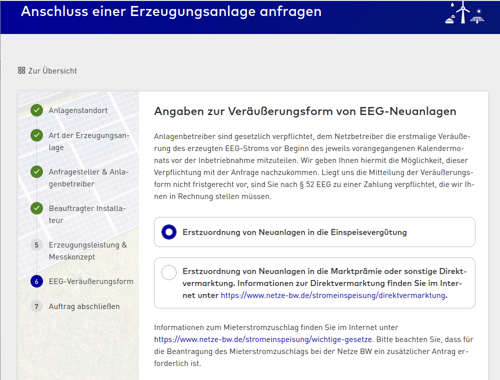
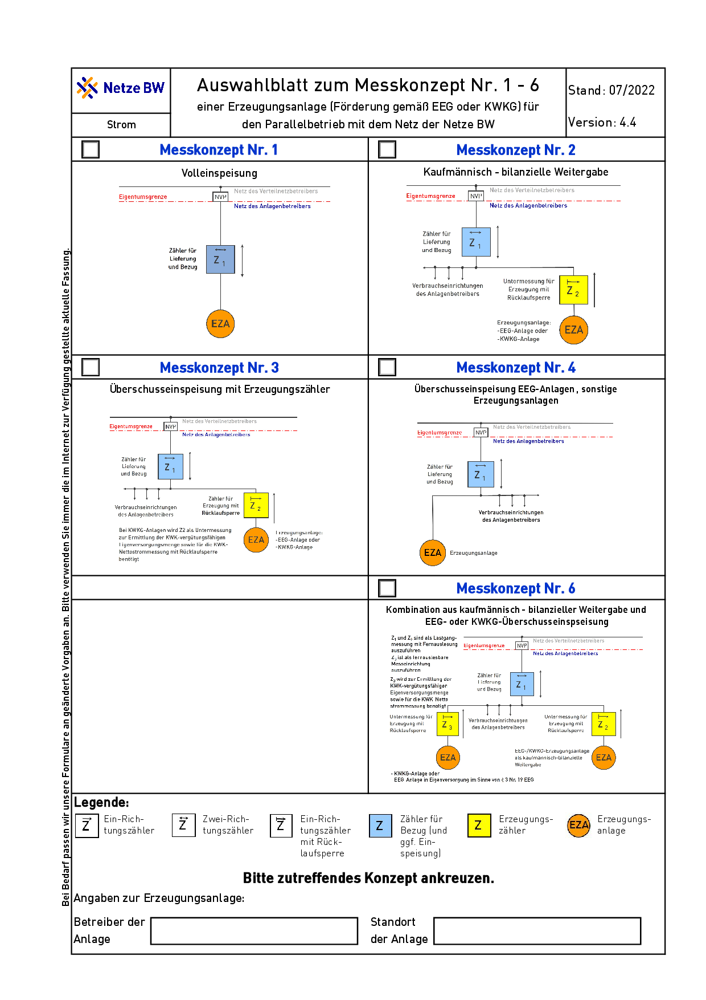
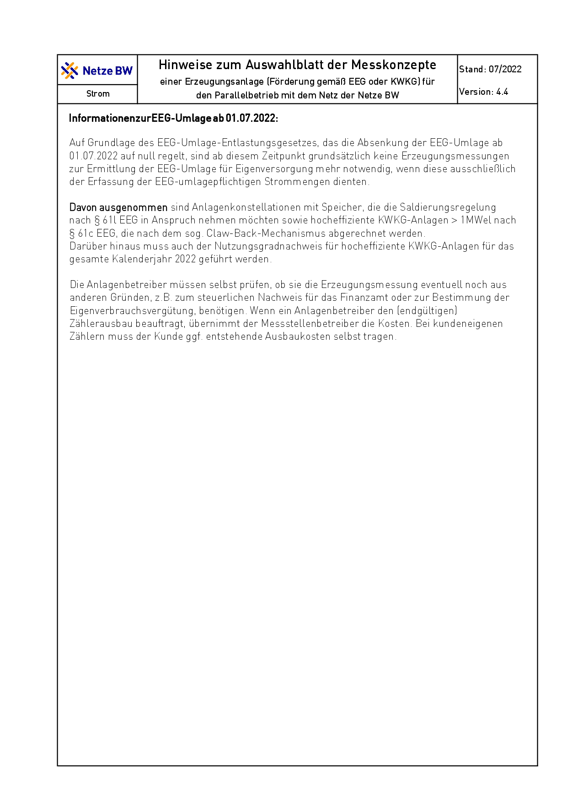
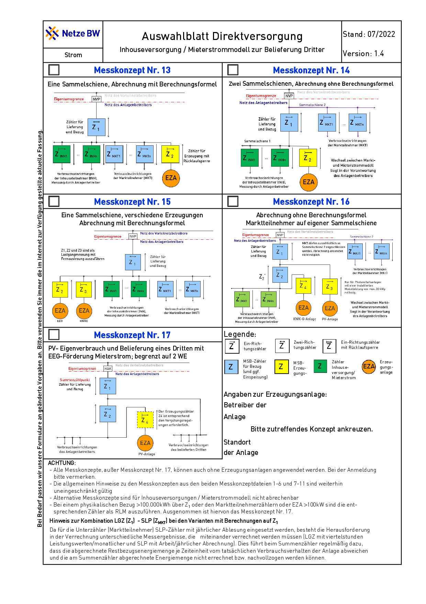
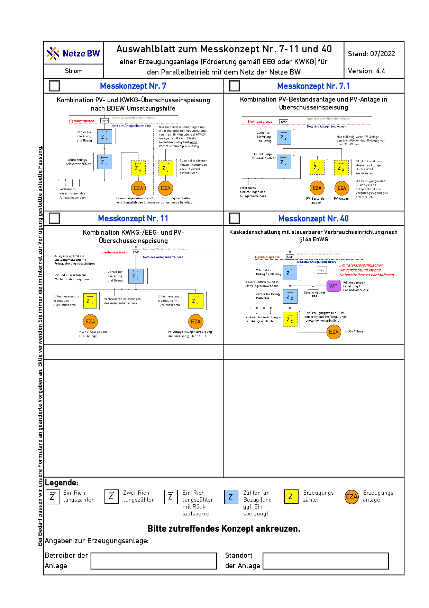
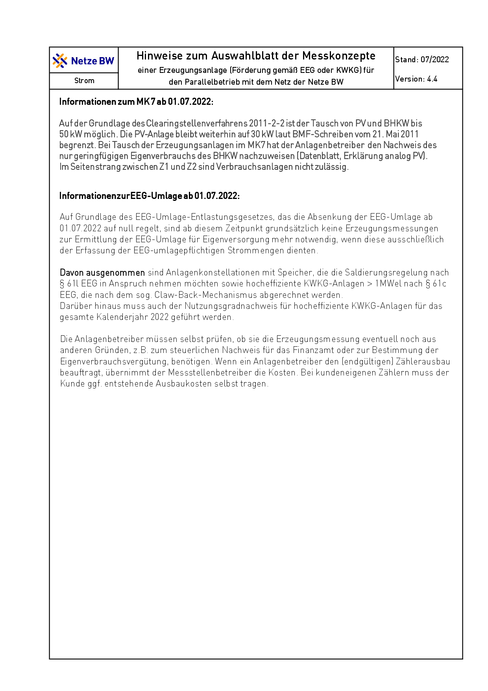
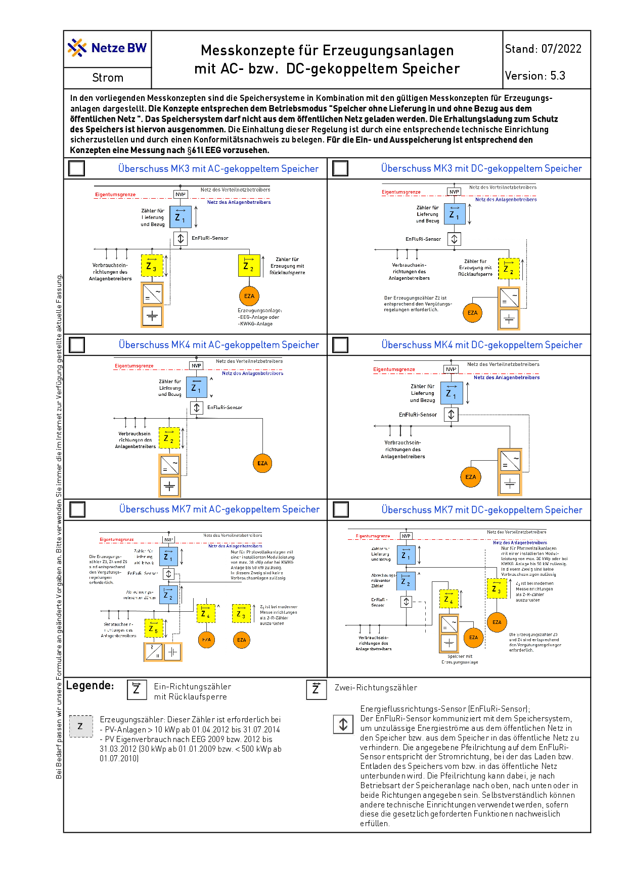
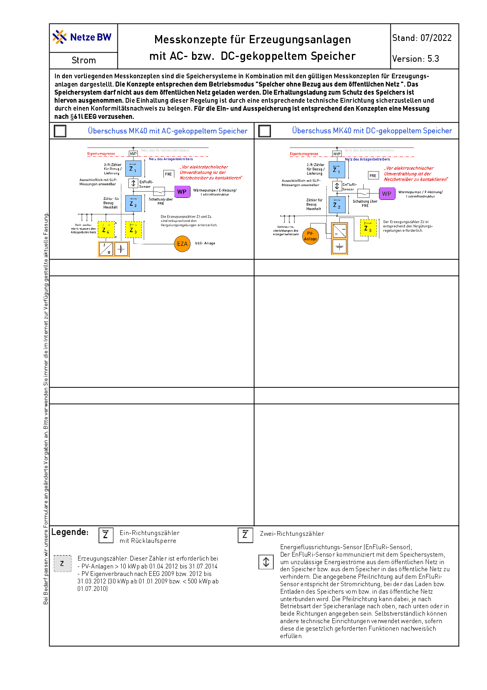

Anmeldung der Anlagen¶
Schritt 1: Antrag auf Anschluss einer PV-Anlage per Mail¶
Auf Anraten von Beiträgen im Photovoltaikforum erfolgt die Anmeldung im ersten Schritt über eine Mail an kontakt ät netze-bw.de. Die Anmeldung über das Online-Portal der Netze-BW benötigt viele Kenntnisse, die zum aktuellen Zeitpunkt noch nicht vorliegen und vermutlich auch nur vom Elektrofachbetrieb beigesteuert werden können.
Netzanschlussbegehren als Erweiterung der bestehenden PV-Anlage 04…
Sehr geehrte Damen und Herren,
ich begehre den Anschluss einer in Planung befindlichen PV-Anlage mit einer Nennleistung von ca. 17 kWp in nördlicher Dachausrichtung am Standort Merowingerstraße 6, 78662 Bösingen (privates Einfamilien-Wohnhaus). Ich gehe auf Grund der nördlichen Ausrichtung von einer Einspeisung von maximal 70% der Nennleistung der Module, also maximal ca. 12 kWp aus. Basis für die Einspeisung ist die aktuell gültige Version des Gesetzes zur Einspeisevergütung bei Inbetriebnahme ab 1. Februar 2024 bis 31. Juli 2024 (§ 21 Abs. 1, § 53 Abs. 1 EEG)
Die Anlage dient dem Eigenverbrauch und der Netzeinspeisung, es ist ein Akkuspeicher mit einer Kapazität von 24kWh angeschlossen.
Es besteht bereits eine Anlage auf der südlichen Dachfläche. Die Daten zur bestehenden Anlage sind:
MaStR-Nr. der Einheit: SEE…,Vertragskonto: V8…Vertragsnummer: 30…Anlagennummer: 04…Anlagenschlüssel: E1…PV-Anlage 12,600 kWpZähler 1EMH… / 1EMH…Bitte bestätigen Sie mir den Empfang und die Korrektheit dieser Anmeldung und schicken Sie mir unverzüglich einen genauen Zeitplan für die Bearbeitung des Netzanschlussbegehrens. Vielen Dank!
Mit freundlichen Grüßen
Adresse
Schritt 2: Antrag über das Online-Portal¶
Die PV Anlage muss vor Inbetriebnahme bei Netze-BW angemeldet werden. Die Anmeldung erfolgt über das Online-Portal der Netze-BW. Die Anmeldung ist kostenfrei.

Hinweis
Die Anmeldung der Anlage beim Verteilnetzbetreiber (VNB) durch den Elektriker besser nur mittels Formular VDE E.8 SOFORT mit der Inbetriebnahme.
Darauf ergänzen: „Anlage speist ein“. KEINE VNB-Formulare verwenden! Sätze wie „Die Anlage kann gemäß NAV und TAB in Betrieb gesetzt werden“ in „Anmeldung zum Netzanschluss“ sind schädlich!
KEINEN Auftrag zur Inbetriebsetzung / kaufmännischen Abnahme / Netzeinbindung / kaufmännischen Inbetriebnahme an den VNB und keine Kosten für Zählerwechsel unterschreiben!
Quelle: Photovoltaikforum: VDE Formular
Ermittlung der Gesamtleistung der PV-Module¶
Zuerst muss die Gesamtleistung der PV-Module, die an den Wechselrichter angeschlossen werden sollen, berechnet werden. Dies errechnet sich üblicherweise durch Multiplikation der Anzahl der Module mit der Nennleistung eines jeden Moduls:
Ptotal = n × Pmodul
wo n die Anzahl der Module und Pmodul die Nennleistung eines Moduls in Watt ist.
Ptotal = 52 x 330 W = 17160 = 17,16 kW
Berücksichtigung der PV-Modul-Leistungstoleranz¶
Die tatsächliche Leistung der PV-Module kann aufgrund von Leistungstoleranzen variieren. Meist liegt die Toleranz im Bereich von -0% bis +5%. Es ist ratsam, die maximale Leistung zu berücksichtigen, um sicherzustellen, dass der Wechselrichter auch bei höherer Modulleistung angemessen funktioniert.
Die Leistungstoleranz der Heckert 330 W Module beträgt 0 / +4,99 Wp. Die maximale Leistung der Module beträgt daher 330 + 4,99 = 334,99 Wp.
Ptotal = PAGen = 52 x 334,99 W = 17419,48 W = 17,42 kW
Wahl der Wechselrichterleistung¶
Der Wechselrichter sollte so gewählt werden, dass seine Nennleistung die Spitzenleistung der PV-Module aufnehmen kann, aber nicht zu groß dimensioniert ist, da dies zu einer ineffizienten Betriebsweise führen kann. Die Leistung des Wechselrichters sollte daher in etwa der maximalen Leistung der PV-Module entsprechen oder diese leicht übersteigen.
Überlegungen zur Umrichterscheinleistung¶
Die Scheinleistung S eines Wechselrichters ist durch seine Fähigkeit bestimmt, Wirkleistung und Blindleistung zu handhaben. Sie wird normalerweise in Voltampere (VA) angegeben und ergibt sich aus der Formel:
S = V × I
wo V die Spannung und I der Strom ist. Bei der Auswahl eines Wechselrichters muss darauf geachtet werden, dass die Scheinleistung mindestens so hoch ist wie die Gesamtleistung der PV-Module, die in Watt (W) gemessen wird, um sowohl die Wirk- als auch die Blindleistungsanforderungen zu erfüllen.
Einbeziehung von Umweltfaktoren¶
Für eine PV-Anlage mit der Ausrichtung Nord und einer Dachneigung von 30 Grad in Deutschland kann von einer Reduktion der Gesamtleistung auf 60,5% ausgegangen werden. Dies bedeutet, dass die tatsächliche Leistung der PV-Module bei diesen Bedingungen 60.5% der Nennleistung beträgt.
Ptotal = 52 x 334,99 W * 0,6050 = 10538,7854 W = 10,54 kW
Windlastberechnung¶
In Windzone 1 und 2 kann sehr nah an Traufe, Ortgänge und First gebaut werden. Wenige cm Abstand genügen, es geht sogar ohne Abstand.
Sintfluten / schießendes Wasser tritt bei Starkregen nicht auf. Ohne Druck schießt Wasser nicht. Es tropft an der Modulkante ab und läuft zwischen Modulabständen aufs Dach.
Windzone ermitteln : Bösingen liegt in der Windzone 1.
Antrag: Leistungsangaben der Erzeugungsanlage(n)¶
Die Leistungsangaben der Erzeugungsanlage(n) müssen im Antrag angegeben werden:
- Geplante (Modul-) Leistung PAGen (Summenleistung aller Module):
Die geplante (Modul-) Leistung PAGen (Summenleistung aller Module) beträgt 17,16 kW.
- Bemessungsscheinleistung aller geplanten Erzeugungseinheiten (Umrichterscheinleistung) ΣSr,E
Die Bemessungsscheinleistung aller geplanten Erzeugungseinheiten (Umrichterscheinleistung) ΣSr,E beträgt 10 kW.
- Maximale Wirkleistung aller geplanten Erzeugungseinheiten (Umrichterwirkleistung) ΣPEmax
Die maximale Wirkleistung aller geplanten Erzeugungseinheiten (Umrichterwirkleistung) ΣPEmax beträgt 10 kW.
Anschlusswirkleistung der existierenden Anlage [X] Es ist ein Speichersystem geplant: Maximale Wirkleistung aller geplanten Speicher ΣPEmax
Leistungsangaben der Erzeugungsanlage(n) Geplante (Modul-) Leistung PAGen (Summenleistung aller Module)
Bemessungsscheinleistung aller geplanten Erzeugungseinheiten (Umrichterscheinleistung) ΣS r,E
Die Bemessungsscheinleistung aller geplanten Erzeugungseinheiten (Umrichterscheinleistung) ΣS r,E beträgt 10 kW.
Maximale Wirkleistung aller geplanten Erzeugungseinheiten (Umrichterwirkleistung) ΣP Emax
Anschlusswirkleistung der existierenden Anlage
[X] Es ist ein Speichersystem geplant: Maximale Wirkleistung aller geplanten Speicher ΣPEmax
Messkonzepte¶
Im Rahmen der Beantragung muss ein Messkonzept angegeben werden. Dies ist die Auswahl:







Hinweis
Da generell keine Erzeugungsmessung (zB Erzeugungszähler) mehr nötig ist können Wechselrichter an Verteiler dezentral im Hausnetz angeschlossen werden.
Das kann z.B. eine bisher einzelne CEE-Dose oder ein Endstromkreis sein - häufig in Nebengebäuden, Garage, Schuppen zu finden.
Zuleitung -> UV, darin parallel RCD und Sicherung(en) für WR. Am RCD wird der Bestand mit neuer Sicherung angeschlossen.
Quelle: Photovoltaikforum: WR dezentral
Achtung
Warnung: Netze BW GmbH versucht spätestens bei einer zweiten Anlage unnötige Zähler vorzuschreiben und für Betreiber nachteiligen Vertrag zu erwirken.
Von Netze BW gewünschte Vereinbarungen wie „Die ‚Allgemeinen Bestimmungen für die Stromeinspeisung in das Netz der Netze BW GmbH‘ sind Bestandteil dieser Erklärung“ keinesfalls unterschreiben!
Quelle: Photovoltaikforum: Netze BW